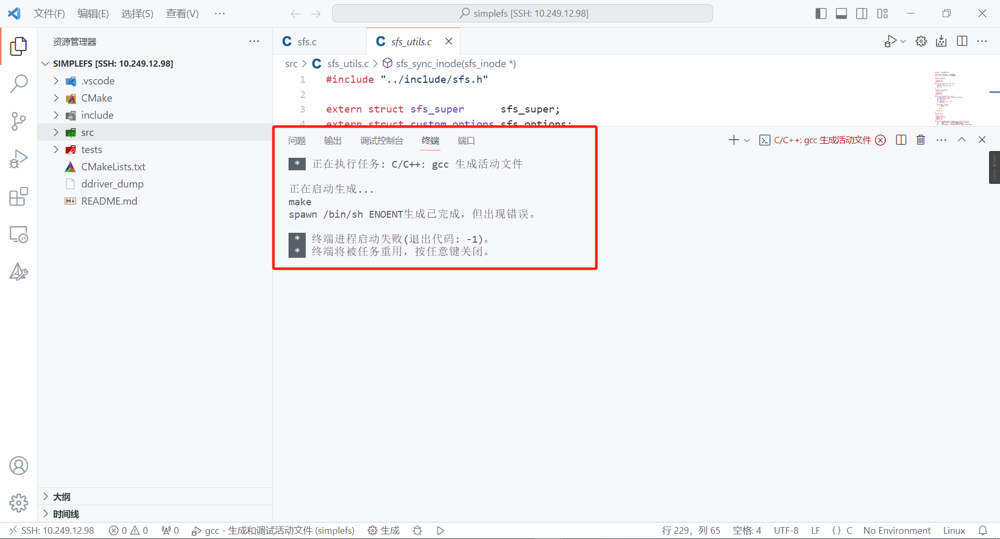
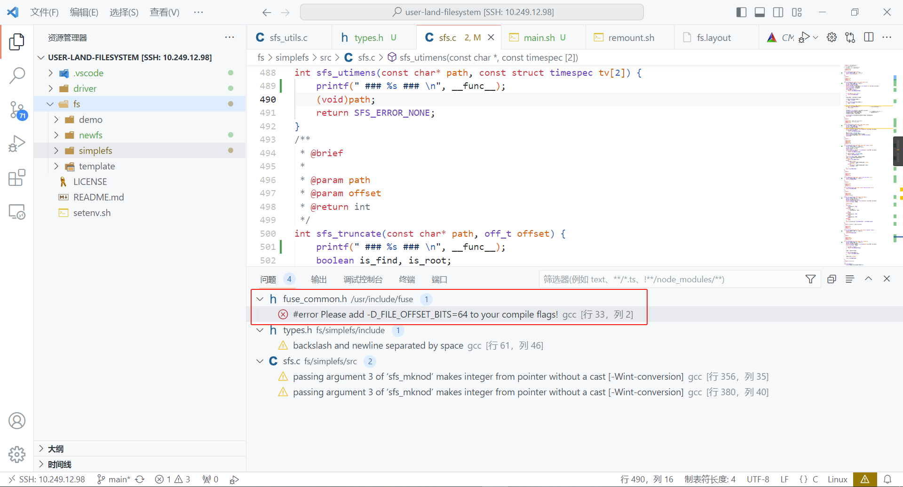
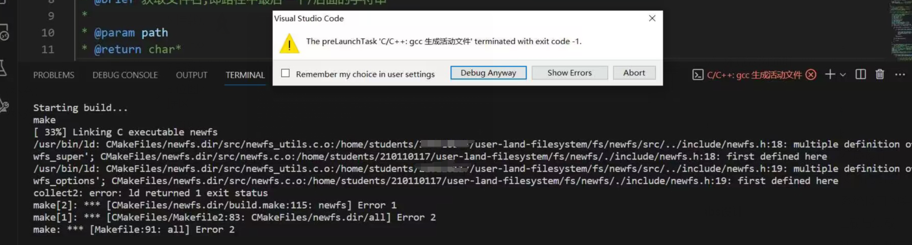
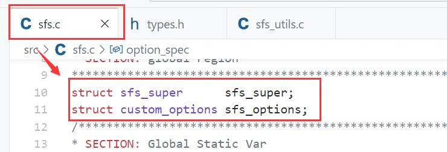
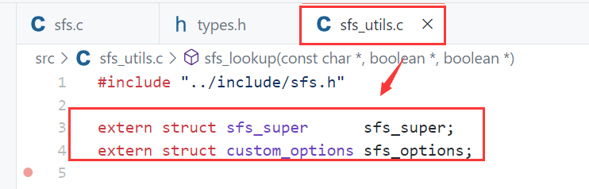
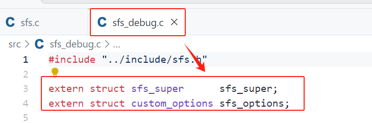
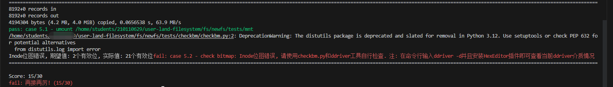
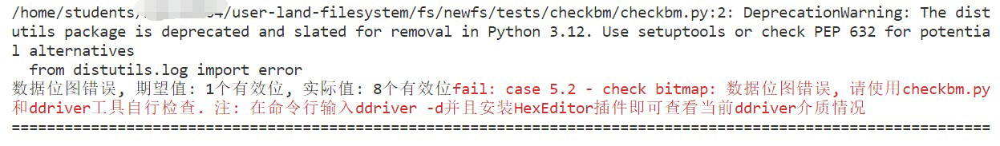
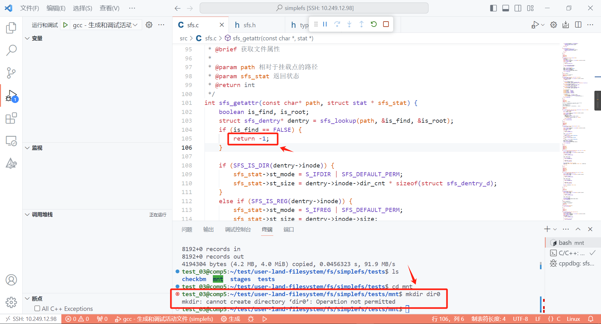
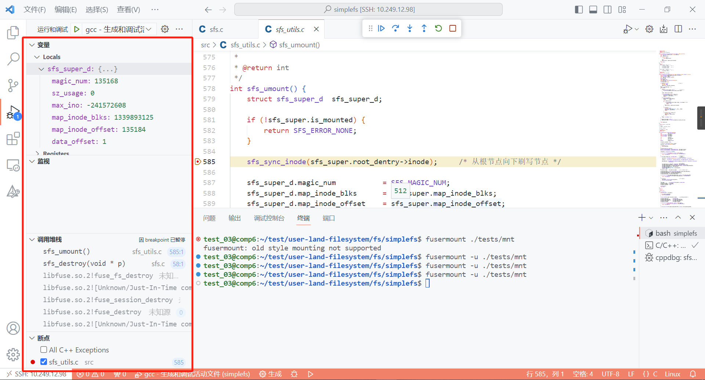

常见问题¶
1. 如何新开一个命令行¶
按下F5（或Fn+F5）后，文件系统运行为 前台模式 。想要输入命令，如执行ls，则需要新开一个命令行。可以通过ctrl + shift +｀呼出一个新的命令行，然后在命令行操作。

另外，如下图所示，可以按这个 拆分键 ，就可以同时显示两个终端了。

2. 挂载点没连接上¶
提示"fuse: bad mount point ... Transports end point is not connected" 如下图所示：

这种情况就是不正常的卸载文件系统，同学们直接ctrl + c或者在VSCode直接关掉程序，导致上次的挂载点仍被占用。我们需要完成 文件系统的卸载 ，释放上次占用的挂载点：
fusermount -u ./tests/mnt
3. 挂载点不空¶
提示"mountpoint is not empty" 如下图所示：

这种情况就是在测试的时候，不小心给mnt文件夹下创建了一个文件，导致mnt目录不是空的，把mnt下的 文件删除 即可，保证mnt目录在挂载时是空的 。
4.挂载点不存在¶
提示"fuse: bad mount point ... No such file or directory" 如下图所示：

这种情况是，文件系统挂载的挂载点，如./tests/mnt不存在。需要同学们提前创建好一个空的文件夹./tests/mnt。
5.挂载点忙碌¶
同学们在执行任务一的测评脚本时，如果遇到fusermount: failed to umount xxx : Device or resource busy的问题，请使用git pull命令更新实验包的任务一测评程序即可。
6.S_IFxxx标红¶

这个问题包括任务一和任务二，上图以simplefs为例展示。
这个标红不会影响同学们项目的编译（F5或Fn + F5），可以选择直接无视。如果你项目编译失败，不是因为这个问题。
当然如果看着不习惯，想取消掉标红，可以在这个文件的 第一行 （注意是第一行），添加以下这个宏定义。
#define _XOPEN_SOURCE 700
一个帖子给出的参考解释：

7.F5编译失败¶
7.1 spawn ... 但出现错误¶
终端界面出现spawn /bin/bash ENOENT生成已完成，但出现错误的错误提示，如下图所示：

这个原因是同学们的项目还没通过ctrl + shift + p进行项目编译环境的配置（见指导书项目编译）。编译环境配置完成后，会生成一个build目录的，这个时候再按F5编译即可。
7.2 #error Please ... flags¶
问题界面出现#error Please add -D_FILE_OFFSET_BITS=64 to your compile flags!，如下图所示：

请检查VSCode打开的目录，是不是正确的。不要直接打开user-land-filesystem目录或其他目录。
如果想做任务一，请用VSCode打开demo文件夹。如果想做任务二，请用VSCode打开newfs（你自己的fs）文件夹。如果想调试simplefs，请用VSCode打开simplefs文件夹。
打开正确的目录后按照指导书项目编译进行即可。
7.3 multiple definition ... first defined here¶
编译时出现xxx_super、xxx_options的multiple definition ... first defined here报错，如下图所示：

原因是没有正确的进行全局变量(xxx_super、xxx_options)的跨文件使用
如何对全局变量，如sfs_super和sfs_options（以simplefs为例），进行跨文件使用？答案是借助好extern关键字（在xv6 lab2 syscall实验应该已经接触过它）。
以simplefs为例，在sfs.c文件声明好全局变量，然后在其他需要使用的文件，如sfs_utils.c和sfs_debug.c使用extern关键字告诉编译器去别的文件找，这里直接使用。



8.位图不通过或没写回数据区¶
运行测评脚本时，在case 5.2 - check bitmap中显示，索引节点位图错误，数据位图错误，没有写回到数据区等。
8.1 索引节点位图错误¶
如下图所示：

测试场景是：清空磁盘重新挂载文件系统后，在根目录下创建了一个文件，根目录有一个inode，文件有一个inode，总计两个inode。也就是inode位图应该是两个有效位。而你的有效位是21个（以上图为例）。
请通过打印位图或者使用Hex Editor查看磁盘等方式查看inode位图，辅助检查一下自己的inode位图修改逻辑是否正确。
8.2 数据位图错误¶
如下图所示：

测试场景是：清空磁盘重新挂载文件系统后，在根目录下创建了一个空文件，根目录有一个数据块，空文件没有数据块，总计一个数据块。也就是数据位图的只有一个有效位。而你的有效位有八个（以上图为例）。
额外注意的是，参考任务二实验内容的第四点，同学们需要按需分配，不能预先分配数据块。
请通过打印位图或者使用Hex Editor查看磁盘等方式查看数据位图，辅助检查一下自己的数据位图修改逻辑是否正确。
8.3 没写回到数据区¶

这个是文件对应的内容，没写到对应的数据块中。
以根目录的内容为例，根目录对应的数据块应该是第一个数据块（假设是逻辑块500），那么逻辑块500应该要出现根目录的子内容，即所有文件的dentry_d结构体。
9.Operation not permitted¶
文件系统挂载成功了，但执行操作，例如mkdir时，显示Operation not permitted，如下图的命令行处所示：

一个可能的原因是，在一些钩子函数处，例如在getattr处（如上图代码处所示）， 处理异常流使用了-1。在Linux错误号中，-1就表示Operation not permitted。
处理的办法是在处理异常流的时候正确的使用Linux错误号，下面以simplefs使用到的错误号定义简单做讲解。
/* 上述示例 */
EPERM /* 值为1, Operation not permitted */
/* 下面是simplefs的错误号定义 */
#define SFS_ERROR_NONE 0
#define SFS_ERROR_ACCESS EACCES /* 值为13, Permission denied */
#define SFS_ERROR_SEEK ESPIPE /* 值为29, Illegal seek */
#define SFS_ERROR_ISDIR EISDIR /* 值为21, Is a directory */
#define SFS_ERROR_NOSPACE ENOSPC /* 值为13, No space left on device */
#define SFS_ERROR_EXISTS EEXIST /* 值为17, File exists */
#define SFS_ERROR_NOTFOUND ENOENT /* 值为2, No such file or directory */
#define SFS_ERROR_UNSUPPORTED ENXIO /* 值为6, No such device or address */
#define SFS_ERROR_IO EIO /* 值为5, I/O Error */
#define SFS_ERROR_INVAL EINVAL /* 值为22, Invalid argument */
同学们可以参考simplefs的错误号使用，正确的使用相关错误号。
10.其他问题 & debug¶
很大概率是自身代码实现的问题。
请灵活F5挂载文件系统，通过使用包括但不限于如下的debug手段：
printf大法
例如每个函数都打印其函数名，printf("### %s ###\n", __func__);，看看最终在哪个函数出的问题。打印可能导致错误的变量，数据位图大小或偏移等，看看是否符合自己的预期。多打印几条不同的printf语句，看最后打印在了哪一条，从而来定位问题出现在哪个区间等等。
VSCode设置断点
单步调试，在左侧窗口看看各个变量的值是否合理，或者找到crash的地方等等。

- 注释掉部分代码
通过注释掉部分代码，来重新运行文件系统，看文件系统是否会发生crash，来定位到最终发生问题的地方。可以采用二分的思想来不断缩小注释的区间来定位。
- 使用Hex Editor查看磁盘镜像
对磁盘镜像进行查看，检查一下例如数据位图、索引节点位图的具体数值，数据写回位置是否和预期的相符等。同学可以参考实验原理中磁盘镜像查看的例子。